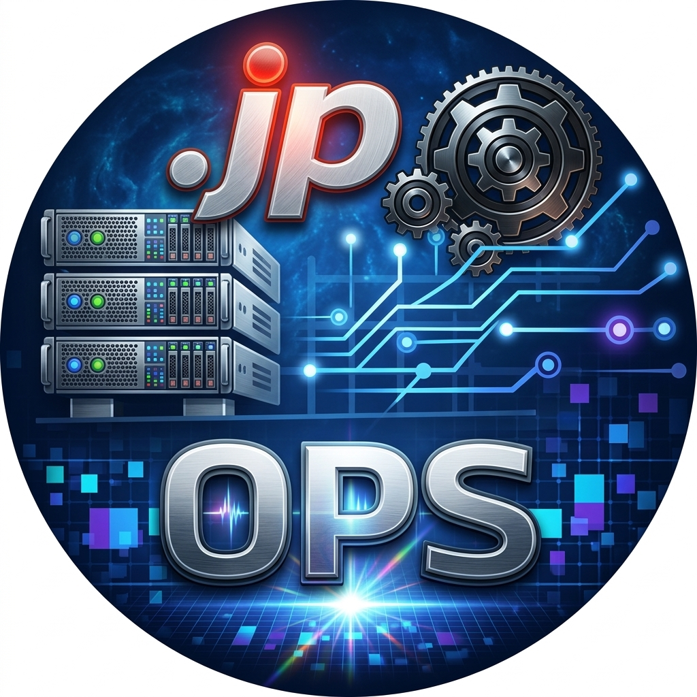

AIとITの力で、ドットジェイピーの運営をもっとスマートに。
UNIFIED PLATFORM
「これ面倒」「ここ自動化したい」を、ぜひ教えてください。小さな違和感が、改善のきっかけになります。
全社カレンダーの活用、情報提供、改善案など、運用を一緒につくる協力をお願いします。
AI・IT・DXに興味がある人、一緒にやりましょう。エンジニアじゃなくても大歓迎です。
もっと楽に、もっと本質的な活動に集中できる組織へ。
OPSチームは、AIとITの力で
ドットジェイピーの運営をアップデートしていきます。